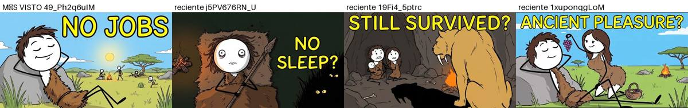
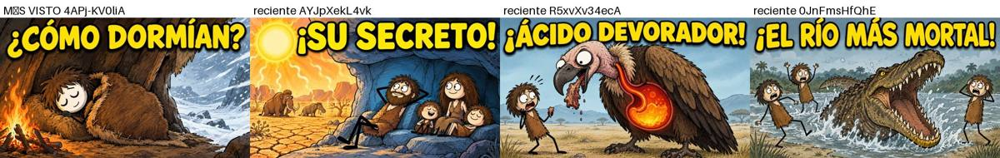
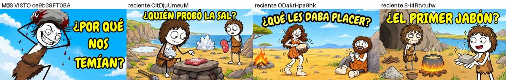
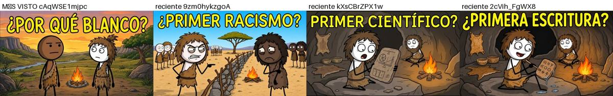
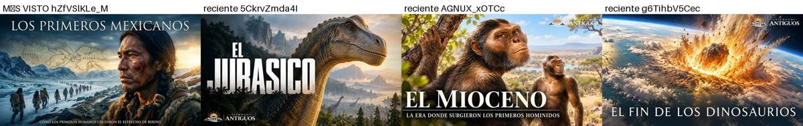
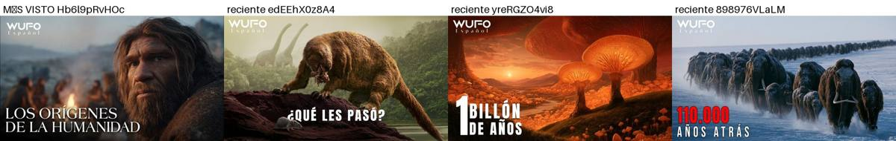
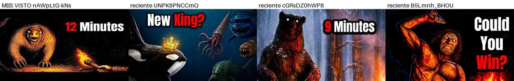
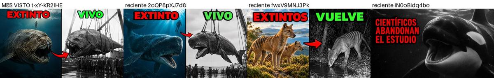

Investigación con la API de YouTube Data v3 · datos del 14/10/2026
¿Qué nicho faceless conviene para un canal nuevo con presupuesto cero?
MEDIDO = viene de la API ESTIMADO = cálculo o referencia externa (RPM, ingresos) OPINIÓN = criterio mío
Resumen en 6 líneas
- Lo más fuerte medido en canales jóvenes y faceless son los videos largos (10–25 min) que contestan preguntas concretas sobre cómo vivían o sobrevivían los humanos antiguos. Por ejemplo, 'What Did Ancient Humans Actually Do All Day?' (13,9M vistas, canal de 6 meses) y 'How Long You'd Last in Every Prehistoric Era' (11,5M, canal de 7 meses). MEDIDO
- En inglés ese subnicho ya está lleno de copias: en la segunda ronda aparecieron decenas de canales de 2026 con títulos casi idénticos. MEDIDO
- En español está empezando: hay canales de 2.000 a 16.000 subs con videos de 200k a 1,3M (Tiempos Antiguos, WUFO Español, Cronología de la Humanidad, Pepe Explica, KROG). Pero también se llena rápido de traducciones de los éxitos en inglés. MEDIDO La ventana está abierta, aunque no por mucho tiempo. OPINIÓN
- Espacio en español sale segundo: tiene buena demanda y las imágenes de la NASA son gratis, pero hay más canales grandes. MEDIDO
- Psicología, estoicismo y finanzas en español salieron mal: muchos canales nuevos y casi ninguno despega. MEDIDO
- Los Shorts dan muchas vistas, pero pagan muy poco. Para monetizar rápido conviene el formato largo (4.000 horas de reproducción). ESTIMADO
1. Ranking de nichos y formatos
Pesos: demanda 25% · competencia 20% · velocidad 20% · costo 10% · politica 15% · rpm 10%. Notas de 1 a 5 (5 = mejor; en competencia y riesgo de política, 5 significa poca competencia o poco riesgo). Puntaje = suma ponderada sobre 100.
Demanda, competencia y velocidad se basan en datos MEDIDO, pero la nota final que les puse es OPINIÓN. El RPM es ESTIMADO: son rangos públicos típicos de la industria, no salen de la API (la API no da ingresos de canales ajenos). Costo y política son OPINIÓN.
| # | Nicho / formato | Puntaje | demanda | competencia | velocidad | costo | politica | rpm |
|---|---|---|---|---|---|---|---|---|
| 1 | Vida y supervivencia de humanos antiguos (ES) Largo 12–25 min · ilustraciones IA + voz IA | 76 | 4 EN probado (13,9M, 11,5M, 2,3M vistas). En ES hay hits de 0,4–1,3M en canales de 3–16k subs | 3 En inglés ya está saturado de copias. En español aparecieron muchos canales en 2026, pero pocos de calidad | 4 Cronología de la Humanidad (6,4k subs, 434k), WUFO Español (1,5 meses, 2,4M totales), Pepe Explica (2,2k subs, 235k) | 5 Solo imágenes IA, voz IA y edición. No hace falta grabar ni comprar material | 4 Educativo y apto para anunciantes. Riesgo bajo si el guion es propio (no plantilla masiva) | 3 Historia/educación en español: estimado US$1–3 por 1.000 vistas |
| 2 | Espacio / astronomía documental (ES) Largo 12–20 min · imágenes NASA/ESA + voz IA | 74 | 5 Mediana de los videos largos en ES: 269k. Astrovía 2,9M, ABISMO 2,5M, Neurika 2,1M | 2 5 canales de más de 1M de subs en los resultados en español, y muchos copiando el formato 'James Webb acaba de...' | 4 5 de 12 canales jóvenes de formato largo tienen mediana ≥20k | 5 Las imágenes de la NASA son de dominio público | 3 Los títulos alarmistas tipo 'acaba de detectar' rozan la desinformación | 3 Ciencia en español: estimado US$1–3 |
| 3 | Animales prehistóricos / megafauna (ES) Largo 10–20 min · ilustraciones IA de criaturas | 70 | 4 Bestias Míticas 4,1M (4 meses), Mundo Extinto 2,1M, BananomiES 934k | 3 ZooExtinto (274k subs) y Planeta Antiguo ya ocupan el lugar. La mediana en ES baja (1,2k) muestra muchos intentos flojos | 3 1 de 23 canales jóvenes en ES con mediana ≥20k; en EN, 11 de 36 | 4 Las imágenes IA de criaturas tienen que verse consistentes y creíbles | 4 Educativo | 3 Estimado US$1–3 |
| 4 | Vida salvaje documental (ES) Largo 20–60 min | 69 | 5 Mediana de los videos largos en ES: 1,49M (la muestra es chica: 26 videos) | 3 Pocos canales, pero con mucha producción | 4 Sin Coordenadas (3 meses, 2,9M), CortexSilvestre (2 semanas, 1,7M) | 2 Necesita material de animales reales: stock pago o metraje ajeno | 2 Alto riesgo de reclamos de copyright y de 'contenido reutilizado' | 3 Estimado US$1–3 |
| 5 | Historias bíblicas animadas (ES) Largo 20–40 min · animación IA | 68 | 5 Mediana de los videos largos en ES: 666k | 2 9 canales de más de 1M de subs en los resultados en español | 3 3 de 7 canales jóvenes de formato largo en ES con mediana ≥20k | 4 Animación IA de personajes consistentes | 3 Tema religioso: comentarios polarizados y riesgo de errores doctrinales | 3 Estimado US$1–3 |
| 6 | Ingeniería / megaobras Mayormente Shorts 3D | 65 | 3 Mediana de los videos largos: 142k en EN; en ES casi todo son Shorts | 3 Pocos canales hacen formato largo | 3 3 de 9 canales jóvenes de formato largo | 3 Una buena animación 3D lleva mucho trabajo | 4 Educativo | 4 Técnico: estimado US$2–5 |
| 7 | Ciencia / curiosidades (Shorts) Shorts < 60 s | 64 | 5 Mediana de 800k en EN, pero el 90% son Shorts | 2 Mucha competencia | 3 Monetizar requiere 10M de vistas de Shorts en 90 días | 4 Barato | 3 Riesgo de contenido repetitivo | 1 Shorts: estimado US$0,03–0,10 |
| 8 | Misterios / civilizaciones perdidas Largo 20–40 min | 62 | 4 Mediana de los videos largos: 345k en EN y 147k en ES | 2 12 canales grandes en EN | 3 3 de 7 canales jóvenes de formato largo | 5 Imágenes IA + voz | 2 La pseudoarqueología ('la IA reanalizó las pirámides...') choca con las reglas de desinformación | 3 Estimado US$1–4 |
| 9 | Finanzas / economía explicada Largo 10–20 min | 58 | 2 EN 246k, pero en ES la mediana de los videos largos es solo 20k | 2 10 canales grandes en EN | 2 2 de 12 canales jóvenes | 5 Gráficos + voz | 4 OK mientras no sea consejo financiero | 5 El más alto: estimado US$5–15 en EN y US$2–5 en ES |
| 10 | Batallas / comparación de tamaño 3D Largo 5–10 min con simulador de juego | 55 | 4 Animals Beast Revolt 7M con 13,7k subs | 2 Muchos clones | 4 Varios canales con menos de 1 año y millones de vistas | 3 Necesita PC y un juego pago | 1 Metraje de videojuego repetitivo, público infantil (contenido 'para niños' paga muy poco) | 1 Infantil: estimado US$0,1–0,5 |
| 11 | Estoicismo / frases Largo 10–40 min | 49 | 3 Mediana de los videos largos en ES: 222k | 1 Saturado de canales casi idénticos | 2 2 de 13 canales jóvenes | 5 Muy barato | 2 El típico caso de 'contenido inauténtico/masivo' | 3 Estimado US$1–3 |
| 12 | Psicología explicada Shorts + largo | 45 | 2 EN 285k, pero en ES la mediana de los videos largos es 784 | 1 48 canales jóvenes de formato largo y solo 1 con mediana ≥20k | 1 Es el peor resultado medido | 5 Muy barato | 3 'Psicología oscura' y temas de salud mental son sensibles | 4 Estimado US$2–5 |
Números por tema e idioma (videos de los últimos 90 días)
Velocidad = de los canales jóvenes (menos de 12 meses) de formato largo, cuántos tienen una mediana de vistas ≥20k en sus últimos 10 videos. MEDIDO
| Tema | Mediana de vistas de videos largos (≥4 min) encontrados | Canales jóvenes de formato largo con mediana ≥20k |
|---|---|---|
| Vida cotidiana antigua EN | 66.212 | 11/103 |
| Vida cotidiana antigua ES | 1.672 | 6/73 |
| Animales prehistóricos EN | 71.350 | 11/36 |
| Animales prehistóricos ES | 1.216 | 1/23 |
| Espacio EN | 473.060 | 2/4 |
| Espacio ES | 268.939 | 3/8 |
| Vida salvaje ES | 1.485.737 | 3/4 |
| Historias bíblicas ES | 666.429 | 3/7 |
| Misterios EN | 345.299 | 2/5 |
| Misterios ES | 147.459 | 1/2 |
| Psicología EN | 284.783 | 1/5 |
| Psicología ES | 784 | 0/26 |
| Estoicismo ES | 222.247 | 2/6 |
| Finanzas EN | 245.969 | 2/8 |
| Finanzas ES | 19.736 | 0/5 |
| Ingeniería EN | 142.133 | 3/5 |
| Ciencia EN | 117.752 | 2/5 |
Ojo: las medianas bajas en ES (vida cotidiana, prehistoria, psicología) no significan que no haya público. Significan que hay muchísimos videos flojos y pocos buenos. Los buenos sí explotan (ver la tabla de evidencia).
2. Tabla de evidencia
Mediana = mediana de vistas de los últimos 10 videos. Factor outlier = vistas del mejor video largo ÷ esa mediana (solo videos ≥4 min, ≥50k vistas y ≥3x). El 'video más visto' sale de los últimos 50 subidos (la API no da el más visto de toda la historia sin gastar 100 unidades por canal). MEDIDO
research/miniaturas/). 35 de 36 son faceless (ilustración IA, render o texto). BananomiES no lo es: el presentador aparece recortado en las miniaturas, así que lo dejé marcado y no cuenta como evidencia. VERIFICADO A OJO3. Los 15 videos más fuertes
Todos son de canales con menos de 200k subs y en su mayoría con menos de 12 meses. Los títulos, las descripciones y los tags son exactos de la API. MEDIDO
13.918.523 vistas · 76.309 likes · 4.267 comentarios · factor outlier x25.4 · vistas/subs del canal 105.4
Tags (4)
what did ancient humans do all day, prehistoric daily life, original affluent society, human behavior
Descripción completa
What Did Ancient Humans Do All Day? All research and sources are linked below. 📚 RESEARCH & SOURCES: ▸ Richard Lee's work-hours study — "What Hunters Do for a Living, or, How to Make Out on Scarce Resources" (1968, in Man the Hunter, Aldine Publishing). Lee's fieldwork with the Ju/'hoansi beginning in 1963 recorded roughly 17 hours a week spent acquiring food. ▸ The Original Affluent Society — "Stone Age Economics" by Marshall Sahlins (1972, Aldine-Atherton). The essay that reframed hunter-gatherers as the first affluent society. ▸ Skeletal health decline with farming — "Paleopathology at the Origins of Agriculture" edited by Mark Nathan Cohen & George Armelagos (1984, Academic Press). Shorter stature, more cavities, more joint disease among early farmers compared to the hunter-gatherers before them. ▸ Endurance running & persistence hunting — "Endurance running and the evolution of Homo" (2004, Nature) https://doi.org/10.1038/nature03052 — sweating and heat dissipation let humans outlast faster prey. ▸ Blombos Cave shell beads, South Africa — "Middle Stone Age Shell Beads from South Africa" (2004, Science) https://doi.org/10.1126/science.1095905 — perforated sea snail shells worn as ornaments over 70,000 years ago. ▸ Hohle Fels flute, Germany — "New flutes document the earliest musical tradition in southwestern Germany" (2009, Nature) https://doi.org/10.1038/nature08169 — a bird-bone flute with five finger holes, roughly 40,000 years old, excavated in 2008. ▸ Polly Wiessner — "Embers of society: Firelight talk among the Ju/'hoansi Bushmen" (2014, Proceedings of the National Academy of Sciences) https://doi.org/10.1073/pnas.1404212111 — 81% of firelight conversation turned to stories. ▸ Social time among the Ju/'hoansi — "Affluence Without Abundance: The Disappearing World of the Bushmen" by James Suzman (2017, Bloomsbury). Roughly six hours a day spent on pure social time. ▸ Biphasic sleep — "Sleep We Have Lost: Pre-industrial Slumber in the British Isles" by A. Roger Ekirch (2001, The American Historical Review). Historical evidence of first and second sleep with a calm waking hour between. ▸ The Hadza — "The Hadza: Hunter-Gatherers of Tanzania" by Frank Marlowe (2010, University of California Press). Work-hour patterns matching the 15–20 hour range. ▸ The farming transition — "Guns, Germs, and Steel" by Jared Diamond (1997, W. W. Norton) and the Fertile Crescent origins of agriculture around 10,000 years ago. ———————————————————— PEOPLE & SITES MENTIONED IN THIS VIDEO: ▸ Richard Lee — Anthropologist who walked into the Kalahari in 1963 with a notebook and a stopwatch and recorded how the Ju/'hoansi actually spent every hour. His count — about 17 hours a week getting food — overturned the textbook story of constant struggle. ▸ Polly Wiessner — Anthropologist at the University of Utah. Her 2014 study compared daytime and nighttime conversations among the Ju/'hoansi Bushmen and found that over 80% of fireside talk shifted to stories, myths, and ceremonies — the hours where culture itself may have been born. ▸ James Suzman — Anthropologist who spent decades with the Ju/'hoansi and documented around six hours of pure social time every day — because in a world with no money, police, or courts, relationships are the bank account, the hospital, and the pension all at once. ▸ The Ju/'hoansi — One of the last groups on Earth still living by hunting and gathering when researchers arrived, in one of the harshest environments a human can live in — the Kalahari Desert on the edge of Botswana. ▸ Blombos Cave — Archaeological site on the southern coast of South Africa. Shell beads over 70,000 years old, drilled and strung to be worn — someone walked to the coast, collected shells, and sat for hours making something purely beautiful. ▸ Hohle Fels Cave — A cave in southern Germany where a 40,000-year-old flute carved from a vulture's wing bone was excavated in 2008 — five finger holes spaced for actual musical notes. Someone in the Ice Age had the free time to learn an instrument. ▸ The Fertile Crescent — The region in the Middle East where humans first planted grain and kept animals around 10,000 years ago — the moment the trap opened, and the moment human time started disappearing. ———————————————————— 🎨 Animation by Ink Explainer ———————————————————— #ancienthumans #huntergatherer #prehistory #humanhistory #archaeology #stoneage #anthropology #history #explainer #animation #education #paleolithic #farming #freetime #kalahari #survival
11.490.282 vistas · 82.252 likes · 4.122 comentarios · factor outlier x63.5 · vistas/subs del canal 304.0
Tags (12)
prehistoric, prehistoric planet, extinct animals, dinosaur extinction, pangea, prehistoric documentary, earth history documentary, prehistoric survival, ice age survival, dinosaur age, prehistoric predators, permian extinction
Descripción completa
How Long You’d Last in Every Prehistoric Era In this video we are going to try and answer the question, How Long Could a Human Survive in Every Prehistoric Era? No myths, no romanticized dinosaurs, just biology, climate, predators, and physics working against the human body. If you’re interested in: prehistoric eras explained what it would feel like to live in the dinosaur age realistic dinosaur survival scenarios human survival vs ancient Earth How Long Could a Human Survive in Every Prehistoric Era? extinction events and ancient climates why modern Earth is uniquely survivable …this video is for you. 0:00 Intro 0:33 Pre-Cambrian 1:03 Cambrian 2:37 Ordovician 3:42 Silurian 5:05 Devonian 6:01 Carboniferous 7:18 Permian 8:37 Early Triassic 9:56 Mid-Late Triassic 10:42 Jurassic 11:26 Cretaceous 12:28 Paleogene 13:31 Miocene 14:10 Pliocene 14:50 Pleistocene #Prehistoric #Dinosaurs #AncientEarth #Evolution #Extinction #IceAge #Jurassic #Cretaceous #Triassic #Permian #Cambrian #HumanSurvival #ScienceDocumentary #EarthHistory #Paleontology #AncientPredators #DeepTime #NatureIsBrutal prehistoric eras prehistoric earth dinosaur age every prehistoric era what if humans lived with dinosaurs prehistoric survival human vs dinosaurs ancient earth explained extinction events explained prehistoric predators ancient animals tyrannasorus rex prehistoric era survival woolly mammoth evolution explained geologic time scale what would kill you in prehistoric times prehistoric climate ice age survival triassic jurassic cretaceous permian extinction cambrian explosion dunkleosteus allosaurus titanaboa prehistoric insects ancient megafauna earth history documentary
4.093.105 vistas · 15.158 likes · 113 comentarios · factor outlier x59.4 · vistas/subs del canal 344.0
Tags (26)
animales, dinosaurios, animales prehistóricos, monstruos prehistóricos, criaturas prehistóricas, animales extintos, depredadores prehistóricos, animales antiguos, historia de la Tierra, vida prehistórica, evolución animal, fósiles, paleontología, animales gigantes, criaturas extintas, depredadores antiguos, Dunkleosteus, Megalodón, prehistoria, anaconda, spinosaurus, tiranosaurio rex, t rex, jurásico, paleontology, documental dinosaurios
Descripción completa
#animalesextraordinarios #prehistoria #dinosaurios #trex #megalodon #anaconda
2.869.318 vistas · 54.617 likes · 2.186 comentarios · factor outlier x11.6 · vistas/subs del canal 38.3
Tags (27)
TelescopioEspacialJamesWebb, JWST, Plutón, NASA, NewHorizons, CinturónDeKuiper, PlanetaEnano, Espacio, Astronomía, ExploraciónEspacial, Ciencia, Astrofísica, Universo, Cosmos, SistemaSolar, DescubrimientoEspacial, NoticiasCientíficas, DescubrimientoCientífico, ExplorarElEspacio, CienciaPlanetaria, TecnologíaEspacial, AmantesDeLaAstronomía, DocumentalEspacial, EspacioProfundo, DescubrimientoCósmico, MisteriosDelUniverso, NoticiasDelEspacio
Descripción completa
Hay un planeta enano a casi seis mil millones de kilómetros de aquí que está haciendo algo que, en teoría, no debería poder hacer: se está enfriando a sí mismo. Con su propio cielo. Sin ayuda de nadie. Durante casi un siglo pensamos que Plutón era una roca muerta, congelada, olvidada en el rincón más oscuro del sistema solar. Y resulta que nos equivocamos por completo. En los últimos años, el telescopio James Webb apuntó hacia ese puntito de luz perdido en la oscuridad, y lo que encontró dejó a los científicos sin una explicación clara. Tres descubrimientos, uno detrás del otro, y cada uno más raro que el anterior. Un mundo que fabrica su propio frío. Una nieve de ingredientes de la vida cayendo desde hace cuatro mil millones de años. Y un planeta que le está robando la atmósfera a su propia luna. Te voy a contar exactamente qué vio el Webb, por qué no debería ser posible, y por qué esto cambia todo lo que creíamos saber sobre los confines del sistema solar. Y si te gusta el espacio explicado con datos reales y sin exagerar, suscríbete ahora. Porque el Webb sigue apuntando hacia Plutón cada pocos meses, y este canal va a estar aquí para contarte cada cosa nueva que encuentre ahí afuera.
2.914.080 vistas · 29.803 likes · 1.827 comentarios · factor outlier x10.1 · vistas/subs del canal 90.5
Tags (51)
Congo, África, selva, jungla, naturaleza, fauna, flora, animales, gorila, bonobo, okapi, chimpancé, leopardos, elefante, serpiente, pitón, cocodrilo, búfalo, antílope, insectos, arañas, reptiles, anfibios, depredadores, tribus, aldeas, ríos, pantanos, montañas, bosques, árboles, vegetación, biodiversidad, peligro, misterio, aventura, exploración, supervivencia, salvaje, remoto, oculto, desconocido, extremo, tropical, húmedo, lluvias, barro, oscuridad, documental, viajes, 4K
Descripción completa
¿Y si el teléfono con el que estás viendo esto llevara dentro un pedacito de la selva más inconquistable del planeta? En este documental en español viajamos al Congo, el corazón verde de África: un país tan grande que dentro cabrían Francia, España, Alemania y Suecia juntas, atravesado por el río más profundo de la Tierra y cubierto por la segunda selva tropical del mundo, el segundo pulmón del planeta. Aquí el río Congo cruza el ecuador dos veces, por eso nunca se agota; y en su abismo de más de doscientos metros viven peces ciegos que no existen en ningún otro lugar. En sus laderas volcánicas sobreviven los gorilas de montaña, salvados del borde de la extinción, y solo al sur del río habita el bonobo, el simio que eligió el amor en vez de la guerra. Se esconde el okapi, el "unicornio africano" que la ciencia tardó siglos en creer. Y en el cráter del Nyiragongo arde un lago de lava permanente sobre la ciudad de Goma. Entre pueblos del bosque que llevan aquí más tiempo que casi nadie y el cobalto del que depende medio planeta, el Congo no es un lugar lejano: viaja, sin saberlo, en el bolsillo del mundo entero. ¿Es el Congo la tierra más rica de la Tierra… o la que más ha pagado por serlo? Sin Coordenadas 🧭 🔔💚 Suscríbete y únete a la expedición 👉 https://www.youtube.com/channel/UCnIpkOAIMk5pfhHxIIuwa1g Cuéntanos en los comentarios desde qué país nos acompañas hoy, te leemos ⬇️⬇️ Dinos qué fue lo que más te impresionó del Congo. ▶️ No te pierdas otras expediciones: 👉 https://youtu.be/6_hNsnnw3oM?si=ziO4OAf6y3mfSlcp 👉 https://youtu.be/gzVC_Z0KExg?si=fhbsx95VXYUXYPgG 👉 https://youtu.be/BUd5nHXzYUo?si=O-j2hEsSLGDPOkqg #documental #documentalenespañol #congo #africa #selva
2.328.538 vistas · 7.074 likes · 194 comentarios · factor outlier x129.9 · vistas/subs del canal 1258.7
Tags (21)
how do igloos stay warm, ancient engineering, Inuit igloo, Inuit igloos, ancient Inuit, igloo engineering, how igloos stay warm, igloo insulation, Arctic survival, Inuit history, ancient technology, snow house, snow shelter, catenary arch, Arctic engineering, cold weather survival, traditional Inuit shelter, history documentary, engineering documentary, ancient architecture, ZENO
Descripción completa
How Did ANCIENT INUIT Igloos Stay Warm at -50°C With NO Electricity? Video Link: https://youtu.be/0tSwA12rEtk For centuries, Inuit hunters crossed the frozen Arctic of northern Canada and Greenland, surviving extreme temperatures with no electricity, furnace, or modern heating system. In this documentary, discover how igloos used ingenious engineering principles including spiral snow-block construction, curved walls, wind-packed snow insulation, low entrance tunnels, raised sleeping platforms, ventilation, body heat, and seal-oil lamps to turn deadly Arctic cold into a livable shelter. You’ll also see why these traditional snow-building techniques still matter today — and why modern survival specialists continue to study and practice them in extreme Arctic conditions. PRODUCTION & COPYRIGHT: Original research, script, scene structure, narration, editing and final documentary production: ZENO Research & narration script development: ZENO + Claude Images & visual concepts: ChatGPT + Gemini + Banana 2 Video generation & animation: Google Veo 3 Video editing & post-production: CapCut Thumbnail creation & design: ChatGPT + Canva Voice production: ElevenLabs All illustrated scenes and visual reconstructions are custom-created and assembled specifically for this ZENO documentary. This video is not a re-upload or compilation of another creator’s work. © ZENO. Original script, editing, visual arrangement, documentary structure and final production belong to the ZENO channel. Any third-party music or sound effects, where used, are properly licensed. #Igloo #AncientEngineering #ZENO
2.332.783 vistas · 26.676 likes · 1.572 comentarios · factor outlier x373.4 · vistas/subs del canal 199.4
Tags (10)
spray foam, bedouin, bedouin life, Bedouin clothing, desert survival, thermal regulation, insulation, spray foam kit, arabia facts, how to know what spray foam to use
Descripción completa
Bedouin clothing uses loose layers to survive extreme heat. See how this ancient engineering traps cool air against the skin. This video explores the physics behind desert survival strategies, focusing on how nomadic cultures manage internal temperatures without modern technology. We break down the specific relationship between loose-fitting garments and thermal regulation, examining why adding layers is actually the most effective way to stay comfortable in intense desert heat. By analyzing the insulation properties of these traditional fabrics, we can see how simple design choices prevent direct sunlight from reaching the body while facilitating constant ventilation. Understanding these desert survival techniques offers a clear look at how human ingenuity adapts to some of the harshest environments on earth. Subscribe for weekly historical engineering breakdowns, and comment below on which traditional survival method you want to see explained next. 0:00 The Counterintuitive Logic of Desert Attire 1:19 Identifying the Two Primary Heat Enemies 3:21 The Genius of Loose, Layered Clothing 5:49 The Bellows Effect and Natural Ventilation 6:34 The Mystery of Wearing Black in the Sun
2.162.806 vistas · 13.052 likes · 1.045 comentarios · factor outlier x14.7 · vistas/subs del canal 135.2
Tags (20)
daily life in ancient rome, ancient rome documentary, roman forum, circus maximus, roman history, ancient history, ancient rome, roman empire, life in ancient rome, what was life like in ancient rome, roman daily life, roman baths history, ancient roman baths, roman chariot racing, colosseum, julius caesar, history documentary, weird history, 7 days in ancient rome, ancient civilizations
Descripción completa
Forget the marble. Daily life in ancient Rome started in the dark, with a knock at your door, and if you ignored it, you probably didn't eat. This isn't an ancient Rome documentary about emperors. It's about the version of you who would have lived there. 🏛️ Bring a piece of ancient Rome with you. Roman keychain linked below 👇 https://link.amazon/B09mac30e Most roman history skips what a day actually felt like. There was the dawn queue for a rich man's handout, the Roman Forum emptying at noon, and the baths where you scraped yourself clean with a metal blade. Then there were the toilets: thirty seats, no walls. Topics covered: how ancient history really felt at street level, from why the Circus Maximus drew bigger crowds than the Colosseum to Roman fast food, gladiator myths, Saturnalia, and why Roman hours changed length with the seasons. Timestamps 0:00 — Why Romans Woke Up in the Dark 5:30 — Six Floors Up, No Kitchen, No Water 9:30 — The Hour Every Roman Avoided 18:00 — Bigger Than the Colosseum 27:00 — Never Walk Home After Dark Stay to the end. The thing Romans considered closer to punishment than peace is something you chase every single day. #AncientHistory #RomanHistory #DailyLifeInAncientRome SOURCES Keyword data: vidIQ keyword research, metrics dated 21 Sep 2026 Salutatio and sportula: Juvenal, Satires 1 Night muggings, cart noise, and making your will before walking home: Juvenal, Satires 3 Daytime cart ban: Lex Julia Municipalis (Tabula Heraclensis) Living above a bathhouse, including the armpit plucker: Seneca, Epistles 56 Midday arena session: Seneca, Epistles 7 Schoolmaster waking the neighbourhood: Martial, Epigrams 9.68 Diocles' career earnings: CIL VI 10048 Bath theft curse tablets: Bath curse tablets (Aquae Sulis) Thermopolium with painted counter: Pompeii Regio V excavation, 2019–2020 Disclaimer The content on Rome Unscrolled is created for educational and informational purposes. While every effort is made to present Roman history accurately, some topics are simplified, interpreted, or told in a storytelling format to make them more engaging and accessible. Much of what we know about ancient Rome comes from ancient writers, inscriptions, and archaeology, all of which can be incomplete, biased, or open to interpretation. Historians and archaeologists don't always agree, and new discoveries continue to reshape our understanding. Rome Unscrolled does not provide professional academic or scholarly advice. Viewers are encouraged to explore primary sources, academic publications, and expert research for deeper study. By watching, you acknowledge that historical interpretations may vary and that this channel's goal is to bring the Roman world to life and inspire curiosity about it.
1.671.699 vistas · 23.827 likes · 876 comentarios · factor outlier x11.7 · vistas/subs del canal 245.1
Tags (15)
gorila espalda plateada, gorila, depredadores del gorila, gorila vs leopardo, gorilas de montaña, Dian Fossey, animales salvajes, comportamiento animal, primates, animales en peligro, datos curiosos de animales, documental, animales, naturaleza, salvaje
Descripción completa
🦍 LA FRASE QUE SE REPITE “Ningún depredador se atreve a atacar a un gorila espalda plateada.” Se dice en documentales, libros y videos. Pero es verdad solo a medias, y la mitad que no lo es resulta la más interesante. En este video analizamos por qué un leopardo casi nunca intenta atacarlo, qué significan los golpes en el pecho, y cuál es el único enemigo contra el que ni el gorila más fuerte tiene defensa. 🔎 EN ESTE VIDEO ✔ Qué es realmente un espalda plateada ✔ Por qué el costo de atacarlo es demasiado alto para un leopardo ✔ Cómo funcionan las “señales costosas”: rugidos, carreras falsas y golpes en el pecho ✔ Por qué esta frase depende del lugar donde viva el gorila ✔ Los tres enemigos que sí lo amenazan: las personas, la enfermedad y la pérdida de su hogar ⏱️ CAPÍTULOS 0:00 La frase que se repite (y su error) 1:25 Qué es un espalda plateado 3:06 Por qué el leopardo casi no ataca 4:57 El grupo y el lenguaje de la intimidación 10:10 No es invencible 13:33 Sus verdaderos enemigos 📚 FUENTES PARA VERIFICAR Wikipedia, gorila: https://en.wikipedia.org/wiki/Gorilla Wikipedia, gorila del este: https://en.wikipedia.org/wiki/Eastern_gorilla Wikipedia, gorila del oeste: https://en.wikipedia.org/wiki/Western_gorilla WWF, ficha del gorila: https://www.worldwildlife.org/species/gorilla/ Programa Internacional de Conservación del Gorila, gorilas de montaña: https://igcp.org/mountain-gorillas/ ℹ️ NOTA: las cifras de fuerza que se repiten en internet casi nunca vienen de mediciones rigurosas, y el video lo aclara. Los casos de ataques de leopardo a gorilas están poco documentados. Guion investigado y editado por el canal; narración con voz sintética. 💬 ¿Crees que algún animal podría vencer a un espalda plateada? Respóndeme en los comentarios. 🔔 Suscríbete para más animales explicados con ciencia. #gorila #espaldaplateada #animalessalvajes #documentalanimales #datoscuriosos
1.357.737 vistas · 6.311 likes · 373 comentarios · factor outlier x55.7 · vistas/subs del canal 87.6
Tags (10)
Edad Antigua, Edad Media, Renacimiento, Ilustración, Revolución Francesa, Revolución Industrial, Imperio Romano, Segunda Guerra Mundial, Guerra Fría, Civilizaciones antiguas
Descripción completa
Hace miles de años, los primeros habitantes de América emprendieron un viaje que cambiaría la historia para siempre. Mucho antes de civilizaciones como los olmecas o los mexicas, grupos humanos cruzaron desde Asia hacia el continente americano a través de un territorio hoy desaparecido: el Estrecho de Bering. Pero… ¿cómo lograron sobrevivir a un entorno tan extremo? ¿Y por qué decidieron emprender un viaje hacia lo desconocido? En este video descubrirás: 🔺 Qué era el puente de tierra de Beringia durante la última Edad de Hielo 🔺 Cómo los primeros humanos migraron desde Asia hacia América 🔺 Las condiciones climáticas extremas que enfrentaron 🔺 Cómo estos primeros grupos dieron origen a las culturas de América 🔺 La conexión entre estos antiguos migrantes y los pueblos de México Lo que comenzó como una migración por supervivencia… terminó dando origen a algunas de las civilizaciones más fascinantes de la historia. Un viaje silencioso, sin mapas ni registros… pero que dejó una huella eterna en el mundo. Prepárate para descubrir el origen más antiguo de América… y cómo todo comenzó con un cruce imposible. 📌 Suscríbete para más historias que conectan el pasado con el presente 👍 Dale like si te apasiona la historia antigua 💬 Comenta: ¿Crees que hubo otras rutas además del Estrecho de Bering? #EstrechoDeBering #HistoriaAntigua #OrigenDeAmérica #MigraciónHumana #CivilizacionesAntiguas #HistoriaDeMéxico #MisteriosHistóricos
1.118.624 vistas · 16.238 likes · 1.853 comentarios · factor outlier x87.7 · vistas/subs del canal 70.4
Tags (14)
Vikings life, medieval times, viking sanitation, viking longship life, norse bathing culture, medieval europe disease, viking vs medieval, why vikings were clean, viking comb, crusader ships disease, viking health, medieval sanitation failure, no toilet, gokstad ship
Descripción completa
#Vikings #VikingHygiene #medievaleurope Sixty-five men. One open ship. Three weeks at sea. No toilet. No soap. No clean water. Every law of medicine says this crew should be dead within days. Cholera. Dysentery. Typhus. Pick one. But they didn't die. They reached Iceland. They colonized Greenland. They touched North America. Meanwhile, medieval Europe had surgeons, sanitation laws, and purpose-built toilets — and still lost entire fleets to disease. Eight hundred years later, the Royal Navy was still burying sailors killed by their own ships. How did Viking crews stay healthy on longships with zero sanitation — while medieval European fleets lost thousands to disease? This video breaks down every layer of Norse hygiene at sea, and the one belief that may have cost Europe fifty million lives. 📌 Chapters 00:00 — Sixty-Five Men, One Ship, Zero Plumbing 01:20 — The Fleet That Died Below Deck 04:31 — The Cleanest Barbarians in Europe 06:48 — A Ship With No Toilet — And No Need for One 11:04 — Hygiene as Culture — Not Choice 15:39 — Why One Civilisation Thrived and the Other Buried Millions 19:13 — The Ritual They Never Fully Understood 21:05 — The System That Outlasted Empires 🔍 This video covers: - Viking hygiene and sanitation at sea - Why Viking longships had no toilets - Viking grooming culture — combs, bathing, washing rituals - Laugardagr — the Norse origins of Saturday - Viking ship design and natural bilge flushing - Medieval European sanitation failures - How the Black Death exploited poor hygiene infrastructure - Crusader fleet disease casualties - Viking beer as accidental pasteurisation - Why medieval Europe feared bathing - Norse vs medieval disease prevention compared 📚 Sources & References - Oseberg Ship (834 AD) — Excavated 1904, Vestfold, Norway. Universitetets Oldsaksamling - Gokstad Ship (890 AD) — Excavated 1880, Vestfold, Norway. Viking Ship Museum, Oslo - Skuldelev Ships — Excavated 1962, Roskilde Fjord, Denmark. Viking Ship Museum, Roskilde - Coppergate/Jorvik Excavation (1976–1981) — York Archaeological Trust - Lloyds Bank Coprolite — Discovered 1972, Coppergate, York - Ahmad ibn Fadlan, Risala (c. 921 AD) — Account of Norse Rus traders on the Volga River - John of Wallingford, Chronicle (c. 1220 AD) — Viking settler hygiene in England - HMS Thunderer cholera outbreak, 1854 — Royal Navy medical records - Black Death (1347–1353) — Benedictow, The Black Death: The Complete History (Boydell Press, 2004) - Medieval bathing avoidance — Smith, Clean: A History of Personal Hygiene (Oxford, 2007) - Clinker construction & bilge dynamics — Crumlin-Pedersen, Archaeology of Seafaring (Viking Ship Museum) - Viking harbour network (200+ sites) — Westerdahl, maritime cultural landscape research 🎵 Music Music: Prepare for War by Alexander Nakarada (https://www.creatorchords.com) Licensed under Creative Commons BY Attribution 4.0 License https://creativecommons.org/licenses/by/4.0/ Music: Adventure by Alexander Nakarada (https://www.creatorchords.com) Licensed under Creative Commons BY Attribution 4.0 License https://creativecommons.org/licenses/by/4.0/ Music: Dungeons and Dragons by Alexander Nakarada (https://www.creatorchords.com) Licensed under Creative Commons BY Attribution 4.0 License https://creativecommons.org/licenses/by/4.0/ Music: Celtic Atmosphere by Alexander Nakarada (https://www.creatorchords.com) Licensed under Creative Commons BY Attribution 4.0 License https://creativecommons.org/licenses/by/4.0/ - And Special Thanks for Musics BreakzStudios and Playsound from Pixabay "The imagery presented in this video has been crafted using AI to help visualize and illustrate the concepts discussed." #MedievalPlague #BlackDeath #VikingAge #NorseHistory #HistoryDocumentary #AncientSurvival
1.102.818 vistas · 14.792 likes · 913 comentarios · factor outlier x440.9 · vistas/subs del canal 173.7
Tags (33)
humano antiguo, cavernícola, neandertal, hombre de las cavernas, historia, evolución humana, prehistoria, animación, dibujos animados, caricaturas, ms paint, humor, comedia, memes, curiosidades, ciencia, antropología, explicaciones simples, historia divertida, documental animado, educación, entretenimiento, paleolítico, edad de piedra, fuego, supervivencia, cultura antigua, datos curiosos, aprendizaje, storytelling, personajes graciosos, animación 2D, videos educativos
Descripción completa
Durante la mayor parte de la historia humana, todos nuestros ancestros compartían una característica: tenían la piel oscura. Entonces, ¿cómo aparecieron las personas de piel clara? ¿Fue una adaptación? ¿Una casualidad? ¿O una respuesta a uno de los mayores desafíos que enfrentó nuestra especie al abandonar África? En este video exploramos la fascinante historia evolutiva del color de la piel humana. Descubriremos cómo la radiación solar, la vitamina D, la melanina y miles de años de selección natural dieron forma a uno de los rasgos más visibles de nuestra especie. En este video hablamos sobre: ☀️ Por qué los primeros humanos tenían la piel oscura y cómo eso favorecía su supervivencia 🧬 La piel como un órgano especializado para protegernos de la radiación ultravioleta 🛡️ El papel de la melanina como uno de los mayores escudos evolutivos del cuerpo humano 👶 La importancia del folato durante el embarazo y su relación con la pigmentación de la piel 🌍 Qué ocurrió cuando nuestros ancestros abandonaron África y llegaron a regiones con mucho menos sol 🦴 La vitamina D y por qué la piel clara ofrecía una ventaja en las latitudes del norte 🏺 El Hombre de Cheddar y cómo la Revolución Neolítica aceleró cambios genéticos en Europa 👁️ La sorprendente historia de los ojos azules y lo que la genética moderna revela sobre nuestros orígenes El color de la piel nunca fue una cuestión de superioridad o inferioridad. Fue una adaptación. Un extraordinario ejemplo de cómo la evolución modifica lentamente a una especie para sobrevivir en distintos rincones del planeta. ━━━━━━━━━━━━━━━━━━━━━━━━━━━━ ⏳ Capítulos 00:00 Introducción: el color no vino de la nada 00:48 Todos los ancestros tenían piel oscura 01:38 La piel como órgano y la radiación UV 02:23 Melanina como escudo evolutivo 03:37 El folato y el embarazo 04:57 La salida de África: el sol se debilita 06:13 Vitamina D, raquitismo y el norte 08:47 El Hombre de Cheddar y la Revolución Neolítica 11:49 Genética, ojos azules y cierre filosófico ━━━━━━━━━━━━━━━━━━━━━━━━━━━━ #evolucion #humanosantiguos #piel #genetica #antropologia #historiahumana #ciencia #biologia #melanina #vitaminaD #africa #arqueologia #prehistoria #naturalezahumana #documental #curiosidades #humanidad #evolucionhumana #historia #geneticahumana
914.345 vistas · 5.161 likes · 613 comentarios · factor outlier x647.1 · vistas/subs del canal 294.0
Tags (3)
history, ice age, human behavior
Descripción completa
What did ancient humans do for pleasure before civilization? We think of early humans as starving survivors who only worked, ate and slept. That is a dangerous misunderstanding. In this video we break down what prehistoric humans actually did for fun in life before civilization. From 40,000 year old bone flutes and dance around the fire, to wrestling, games, storytelling, cave art, toys, feasting and laughter, hunter gatherer lifestyle included far more play than work. We look at Neanderthals, early humans and hunter gatherers, and what human evolution tells us about music, play and joy. If you searched what did ancient humans do all day, what did ancient humans actually do all day, or what did ancient humans do at night, this is the pleasure side of that story. 00:00 What Did Ancient Humans Do For Fun? The Truth Will Surprise You 00:51 Do You Have More Free Time Than a Hunter-Gatherer? 01:14 How Ancient Humans Made Music 40,000 Years Ago 02:06 Why Music Was Survival Technology for Early Humans 02:37 How Ancient Humans Danced for Fun and Learned to Hunt 03:33 Prehistoric Games With Rules, Winners and Losers 05:29 Storytelling at Night - How Ancient Humans Had Fun Without Technology 06:45 Cave Art for Pleasure - Why Ancient Humans Painted in the Dark 07:48 What Neanderthals Did for Fun and Pleasure 08:47 Stone Age Humor - Jokes, Roasts and Laughter as Social Control 09:15 Flirting, Romance and Feasting in the Hunter Gatherer Lifestyle 10:20 What Stone Age Kids Did for Fun 10:51 Dogs in Prehistory - Pets, Play and Love 11:29 The Original Affluent Society - Why Ancient Humans Worked Less 12:40 Do You Have More Free Time Than a Hunter-Gatherer? Final Verdict StickStory explains ancient history and human evolution in short, blunt answers. No dry documentaries, just straight answers. #ancienthumans #humanevolution #prehistoric
871.463 vistas · 2.201 likes · 173 comentarios · factor outlier x34.0 · vistas/subs del canal 260.1
Tags (30)
documental prehistórico, evolución humana, orígenes humanos, evolución explicada, documental sobre la evolución humana, historia prehistórica, Tierra antigua, Tierra prehistórica, historia humana, homíninos, Homo sapiens, Homo erectus, humano, fósil, origen, evolución, neandertales, Charles Darwin, antropología, arqueología, historia de la Tierra, historia, documental científico, Tierra, planeta, ciencia, documental completo, WUFO, #wufo, WUFO Español
Descripción completa
Los Orígenes de la Humanidad: Un Viaje hacia el Primer Hombre de la Tierra | Documental Completo Hace cuatro millones de años, nuestros antepasados vivían en un mundo donde la supervivencia nunca estaba garantizada. Débiles, vulnerables y constantemente perseguidos por depredadores, enfrentaban innumerables peligros en el camino hacia convertirse en humanos. Este documental sobre los orígenes de la humanidad explora las dificultades, las adaptaciones y los vínculos sociales que les permitieron sobrevivir. Descubre cómo el miedo, la cooperación y la determinación moldearon nuestra evolución en este fascinante documental sobre los orígenes humanos. Acompáñanos mientras revelamos la increíble historia detrás del ascenso de la humanidad en este épico documental sobre nuestros orígenes. Explora la historia antigua de nuestro planeta a través de documentales cinematográficos sobre la Tierra prehistórica, los dinosaurios y las increíbles criaturas que alguna vez dominaron el mundo. Viaja a través de la Tierra prehistórica mientras descubrimos ecosistemas perdidos, paisajes antiguos y la evolución de la vida a lo largo de millones de años de cambios extraordinarios. Nuestros documentales devuelven a la vida los misterios de la Tierra prehistórica mediante la ciencia, la narración y asombrosas reconstrucciones visuales de los mundos olvidados de nuestro planeta. Suscríbete y activa las notificaciones del canal WUFO Español - Subscribe: https://www.youtube.com/@wufoes ⚠️ Aviso legal Algunas imágenes mostradas en este video son interpretaciones artísticas y pueden no representar una precisión histórica exacta. Ciertas escenas incluyen imágenes generadas por inteligencia artificial o recreaciones digitales utilizadas para ayudar a visualizar ambientes extintos y eventos del pasado donde no existen registros reales. Estas imágenes tienen como objetivo la ilustración creativa y educativa, no deben considerarse como evidencia científica definitiva. Las miniaturas están diseñadas para generar impacto visual y pueden incluir representaciones artísticas. 📩 CONTÁCTANOS: ¿Tienes una queja, sugerencia, información, envío de contenido, propuesta de patrocinio o consulta comercial? Ponte en contacto directamente con nuestro equipo en: hello@wufoscience.com #Tierra #dinosaurios #prehistoria #ciencia #documental #DocumentalDeLaTierra #documentales #WUFO #WUFOEspañol
637.529 vistas · 14.121 likes · 639 comentarios · factor outlier x99.5 · vistas/subs del canal 64.9
Tags (21)
ancient kings, ancient egypt, origin of kingship, first kings in history, ancient rulers, history of monarchy, Mesopotamian kings, Sumerian kings, Uruk civilization, ancient Mesopotamia, rise of civilization, prehistoric society, human evolution, archaeology documentary, ancient civilizations, divine kingship, early states, history documentary, human history, origins of government, Deep Epoch
Descripción completa
How did humans go from small communities with no permanent rulers to bowing before kings? In this episode of Deep Epoch, we explore the prehistoric origins of kingship and how farming, stored wealth, warfare, religion, inheritance, and growing cities transformed powerful leaders into hereditary rulers. From early Mesopotamia and Uruk to divine kings and royal dynasties, discover how humans created one of history’s most influential political institutions. The crown wasn’t the real invention. The idea that authority could outlive the person wearing it was. #AncientHistory #HumanHistory #Archaeology #Mesopotamia #AncientCivilizations #Kings #Prehistory #HumanEvolution #HistoryDocumentary #DeepEpoch
3b. Lo que muestran las miniaturas
Cada hoja muestra el video más visto (a la izquierda) y 3 recientes del mismo canal. VERIFICADO A OJO
- Documental cinematográfico realista (Tiempos Antiguos, WUFO Español, Um Documentário, Planeta Antiguo, Mundo Extinto): una imagen IA fotorrealista, título corto en tipografía de película, sin flechas ni caras exageradas. En español hay menos canales con este estilo en el tema de humanos antiguos. OPINIÓN: es la diferenciación más clara disponible.
- Pintura oscura y dramática (Fossil): criatura amenazante + un número grande ('12 Minutes', '9 Minutes' = cuánto durarías).
- Antes/después (Bestias Míticas, Mavora): 'EXTINTO → VIVO' en rojo y verde, con foto falsa en blanco y negro. Funciona, pero simula fotos históricas: es un riesgo de desinformación.
- Alarmista (Astrovía, Neurika): 'ÚLTIMA HORA', '¡NASA EN PÁNICO!', 'NO DEBÍA EXISTIR'. Confirma el riesgo de política del nicho de espacio.








4. Estructura de los mejores videos
research/transcripciones/ y research/analisis_gemini/.| Video | Gancho (técnica y primeras palabras) | Bloques | Cierre | Imagen | Audio |
|---|---|---|---|---|---|
| Ink Explainer What Did Ancient Humans Actually Do All Day? | pregunta “This morning, a machine screamed at you until you woke up. You silenced it, and from that second, your day was already decided.…” | 6 bloques 1.9 min promedio | Compara la vida moderna de trabajo constante con la vida de los cazadores-recolectores, cerrando con una reflexión sobre el valor del tiempo. pide suscripción: no · pregunta a comentarios: no | animación estilo stickman con trazos negros sencillos, fondos minimalistas y colores planos ~12 cambios/min · imágenes fijas con zoom/paneo | humana probable, masculina, tono narrativo y reflexivo, ritmo constante (aprox 150 palabras/min) instrumental suave y curiosa de fondo que acompaña el tono reflexivo y de misterio históri |
| Fossil How Long You’d Last in Every Prehistoric Era | pregunta “[00:37] Okay, so the first era is the Precambrian.…” | 13 bloques 1.2 min promedio | Muestra la tabla final completa (tier list) ordenando todas las eras geológicas según la supervivencia del humano. pide suscripción: no · pregunta a comentarios: no | mezcla de ilustraciones científicas, mapas paleogeográficos animados, gráficos de tier list tipo web, animaciones 3D estilo documentales de ~15 cambios/min · mezcla | humana o IA probable; masculino; ritmo aproximado de 130 palabras/min; tono narrativo, casual, analítico y lig Música ambiental instrumental de fondo, misteriosa y cinematográfica tipo documental de na |
| Bestias Míticas Los 12 monstruos prehistóricos MÁS ATERRADORES de la histori | pregunta “¿Y si el animal más aterrador que existió sigue ahí abajo en este momento? Los humanos hemos explorado menos del 5% del océano. Todo lo que …” | 12 bloques 1.8 min promedio | Invita a comentar cuál animal sorprendió más y cuál no querrían encontrar cara a cara, cerrando con llamada a la acción. pide suscripción: sí · pregunta a comentarios: sí | Mezcla de imágenes fotorealistas de stock, ilustraciones generadas por IA, fragmentos de películas (Jurassic Park, The Meg) y material docum ~12 cambios/min · mezcla de video, imágenes con zoom/paneo y efectos de estilo película antigua (rayas, grano). | Voz en off masculina, tono grave, narrativo, misterioso y cinematográfico; ritmo moderado y constante. Música incidental de suspenso, cinematográfica, épica y de tensión que aumenta en momentos |
| Tito Primitivo ¿Por Qué Los Humanos Pasaron de Negros a Blancos? | escena en 2da persona “Mirá tu mano ahora mismo. Sea del tono que sea. Ya sea que seas lo suficientemente pálido como para ser confundido con una hoja de papel, o …” | 4 bloques 3.7 min promedio | Concluye reflexionando sobre cómo el sol no eligió bandos y que toda la diversidad humana proviene de la misma población ancestral en África. pide suscripción: no · pregunta a comentarios: no | Ilustración digital tipo stickman / monigotes minimalistas con estilo animado y educativo (estilo Kurzgesagt en versión simple) ~8 cambios/min · mezcla | IA probable; masculino; ritmo dinámico (~160 palabras/min); tono narrativo, claro y divulgativo Música de fondo instrumental suave, curiosa y rítmica estilo documental científico |
| Tiempos Antiguos Así Cruzaron el Estrecho de Bering los Primeros Mexicanos: D | escena en 2da persona “Había un puente, un corredor de tierra de 1.600 kilómetros de largo que unía dos continentes. Y hace 15.000 años,…” | 5 bloques 3.9 min promedio | Resume el impacto histórico de los primeros americanos, conectando su legado con el mundo actual y cerrando con una reflexión profunda sobre la agricultura y la pide suscripción: sí · pregunta a comentarios: no | fotorealista y cinematográfico de alta calidad (posiblemente generado por IA con estética de documental histórico tipo Netflix/National Geog ~6 cambios/min · mezcla de imágenes fijas con zoom/paneo digital y secuencias de video generadas | humana o IA de alta calidad; masculina; ritmo pausado y narrativo (aprox 120-130 palabras/min); tono solemne, orquestal cinemática con percusión tribal de fondo, creando tensión y asombro |
| Cronología de la Humanidad YhB3V1i75po | escena en 2da persona “Cierra los ojos por un momento e imagina unas manos. Están agrietadas por el frío, los nudillos están hinchados, la piel casi azul.…” | 4 bloques 4.5 min promedio | Reflexiona sobre el tiempo de trabajo actual versus el de los cazadores-recolectores, pide suscripción y deja la gran pregunta final sobre el sentido de la vida pide suscripción: sí · pregunta a comentarios: sí | Ilustración estilo stickman animado tipo whiteboard o video essay en formato sketch de dibujos animados ~8 cambios/min · imágenes fijas con zoom/paneo | humana (IA probable), masculina, tono narrativo reflexivo y pausado, ritmo constante Música de fondo instrumental suave, misteriosa y evocadora que acompaña el tono de video e |
Ink Explainer: bloques, retención y frases de ejemplo
- 00:00–01:03 El contraste entre el hombre moderno atado al tiempo y el cavernícola libre. · abre: Mostrando un despertador insoportable que marca el inicio de la rutina diaria. · engancha: Se pregunta a dónde fue todo el tiempo libre actual y plantea la investigación arqueológica.
- 01:03–02:37 El descubrimiento arqueológico de dos esqueletos con estilos de vida distintos. · abre: Yendo a las excavaciones en el Medio Oriente buscando respuestas en los huesos. · engancha: Muestra cómo el esqueleto del cazador-recolector era más fuerte y saludable que el del agricultor.
- 02:37–03:55 Cómo era un día real en la vida de un cazador-recolector. · abre: Caminando junto a ellos al amanecer sin calendarios ni horarios estrictos. · engancha: Introduce la duda sobre si esto es solo un mito y menciona la investigación de Richard Lee.
- 03:55–06:55 El estudio de Richard Lee en el desierto del Kalahari y las 17 horas semanales de trabajo. · abre: Viajando a Botswana en 1963 para estudiar a los Ju/'hoansi. · engancha: Revela que el verdadero motor de su tiempo libre era la socialización y el sistema de apoyo mutuo.
- 06:55–08:37 El estudio de Polly Wiessner sobre las fogatas nocturnas, los mitos y el sueño bifásico. · abre: Analizando décadas de grabaciones sobre las conversaciones nocturnas alrededor del fuego. · engancha: Compara el ritmo de sueño natural de los antiguos con el insomnio moderno.
- 08:37–11:20 La trampa de la agricultura y cómo la humanidad perdió su tiempo libre. · abre: Mostrando la plantación de la primera semilla en el Creciente Fértil hace 10.000 años. · engancha: Concluye con una reflexión final comparando la libertad ancestral con la esclavitud del reloj actual.
Técnicas de retención:
- Pregunta existencial inicial sobre el tiempo (0:00)
- Giro narrativo al revelar que los esqueletos antiguos eran más sanos que los de agricultores (02:18)
- Uso de datos contraintuitivos (17 horas de trabajo a la semana) (04:32)
- Revelación de gráficos comparativos sencillos entre semana moderna y semana ancestral (08:19)
Frases cortas de ejemplo: “Tu esqueleto es un diario.” · “La agricultura es una trampa.” · “El amor y la compañía eran la única seguridad.” · “Nadie te robó tu tiempo en una noche dramática.”
Por qué se hizo viral (opinión de Gemini): Porque conecta un problema universal y profundamente frustrante de la vida moderna (la falta de tiempo y el estrés laboral) con una revelación histórica fascinante y contraintuitiva sobre nuestros antepasados.
Cara humana en cámara: no
Fossil: bloques, retención y frases de ejemplo
- 00:34–02:37 Pre-Cambrian y Cambrian · abre: Presenta el Precámbrico con mapas y gráficos de temperatura/oxígeno. · engancha: Concluye que la hipoxia destruye al humano y pasa al Ordovícico.
- 02:38–03:42 Ordovician · abre: Muestra el mapa y nivel de oxígeno del Ordovícico. · engancha: Estima que duraría pocos días por inanición y pasa al Silúrico.
- 03:43–05:05 Silurian · abre: Aparecen plantas terrestres primitivas (Cooksonia) y artrópodos. · engancha: Menciona los escorpiones marinos gigantes y pasa al Devónico.
- 05:06–06:01 Devonian · abre: Aparecen peces con mandíbulas y grandes bosques. · engancha: Calcula que duraría semanas pescando y pasa al Carbonífero.
- 06:02–07:19 Carboniferous · abre: Se centra en los insectos gigantes y arruprida gigante. · engancha: Menciona la falta de variedad de comida y pasa al Pérmico.
- 07:20–08:38 Permian · abre: Muestra Pangea y la fauna de sinápsidos y gorgonópsidos. · engancha: Estima un par de semanas debido a los depredadores y pasa al Triásico temprano.
- 08:39–09:57 Early Triassic · abre: Explica la extinción masiva y el Lystrosaurus. · engancha: Define que duraría menos de horas y pasa al Triásico medio-tardío.
- 09:58–11:26 Mid-Late Triassic · abre: Muestra la recuperación del planeta y la llegada de arcosaurios. · engancha: Ubica este periodo en la parte baja de supervivencia y pasa al Jurásico.
- 11:27–12:28 Jurassic · abre: Muestra el mapa del Jurásico y grandes dinosaurios carnívoros. · engancha: Ubica al Jurásico en asiento bajo y pasa al Paleógeno.
- 12:29–13:32 Paleogene · abre: Muestra el mapa post-extinción de dinosaurios y mamíferos gigantes. · engancha: Menciona que el norte es seguro y pasa al Mioceno.
- 13:33–14:11 Miocene · abre: Muestra pastizales modernos y simios. · engancha: Calcula que duraría la mayor parte de un año y pasa al Plioceno.
- 14:12–14:51 Pliocene · abre: Muestra la sabana y sabaturos con Australopithecus. · engancha: Lo ubica como el pináculo de supervivencia y pasa al Pleistoceno.
- 14:52–16:10 Pleistocene · abre: Muestra mamuts, neandertales y la Edad de Hielo. · engancha: Concluye el tier list posicionando al Plioceno como el mejor y el Triásico temprano como el peor.
Técnicas de retención:
- Pregunta hipotética desafiante al inicio (00:00)
- Estructura visual de tier list que se va llenando progresivamente (00:37)
- Uso de monigotes (stickman) para ilustrar situaciones cómicas de peligro (01:12)
- Comparaciones de tamaño impactantes entre humanos y animales gigantes (04:40)
- Cambios constantes de escenario temporal cada 1-2 minutos
Frases cortas de ejemplo: “You just couldn't breathe in any of them.” · “That's a pretty big problem because there's nothing here.” · “Well, you've got a problem though.” · “Yeah, you're toast.” · “Let's find out.”
Por qué se hizo viral (opinión de Gemini): Combina la fantasía del viaje en el tiempo con la ciencia de la paleontología mediante un formato de tier list muy popular en internet, manteniendo un tono dinámico, sarcástico y visualmente atractivo.
Cara humana en cámara: no
Bestias Míticas: bloques, retención y frases de ejemplo
- 00:30–02:01 Número 12: Titanoboa · abre: Muestra el t-rex aclarando que llega en el número 2 y promete el número 1. · engancha: Compara su fuerza con anacondas actuales y da paso al número 11.
- 02:01–03:38 Número 11: Arthropleura · abre: Presenta el milpiés gigante de 2.5 metros. · engancha: Explica por qué crecía tanto por el oxígeno y pasa al Dunkleosteus.
- 03:38–05:15 Número 10: Dunkleosteus · abre: Pez acorazado sin dientes. · engancha: Explica su mandíbula y pasa al Quetzalcoatlus.
- 05:15–06:47 Número 9: Quetzalcoatlus · abre: Pterosaurio gigante del tamaño de una jirafa. · engancha: Compara sus alas con albatros y pasa al Deinosuchus.
- 06:47–08:33 Número 8: Deinosuchus · abre: Cocodrilo gigante devorador de dinosaurios. · engancha: Explica su extinción por sequía del mar interior y pasa al Smilodon.
- 08:33–10:07 Número 7: Smilodon · abre: El tigre dientes de sable. · engancha: Explica la fragilidad de sus colmillos y pasa al Ave del Terror.
- 10:07–12:07 Número 6: Ave del Terror (Phorusrhacos) · abre: Ave corredora gigante carnívora. · engancha: Explica su extinción por el puente de tierra de Panamá y pasa al Spinosaurus.
- 12:07–13:30 Número 5: Spinosaurus · abre: Dinosaurio depredador semiacuático. · engancha: Compara sus huesos densos con aves buceadoras y pasa al Livyatan.
- 13:30–15:01 Número 4: Livyatan · abre: Ballena depredadora prehistórica. · engancha: Compara su cráneo y dientes con cachalotes modernos y pasa al Mosasaurus.
- 15:01–16:47 Número 3: Mosasaurus · abre: Lagarto marino gigante de Jurassic World. · engancha: Compara su tamaño con orcas y pasa al Tyrannosaurus Rex.
- 16:47–18:53 Número 2: Tyrannosaurus Rex · abre: El rey de los dinosaurios terrestres. · engancha: Explica su muerte con el asteroide y pasa al Megalodón.
- 18:53–21:31 Número 1: Megalodón · abre: El tiburón gigante definitivo. · engancha: Cierra reflexionando sobre los misterios del océano inexplorado.
Técnicas de retención:
- Cuenta regresiva del 12 al 1 para mantener la intriga (00:17)
- Promesa inicial de que el número 1 cambiará tu forma de ver el océano (00:40)
- Comparaciones de tamaño con objetos cotidianos o vehículos (autobuses, camiones) (00:54)
- Cambios rápidos de plano y recursos visuales de archivo/películas (12:11)
Frases cortas de ejemplo: “Una serpiente más pesada que un auto.” · “No tenía veneno, no lo necesitaba.” · “Una bola de demolición nadadora.” · “El cielo era solo la mitad del problema.”
Por qué se hizo viral (opinión de Gemini): Combina animales prehistóricos gigantes con referencias de cultura pop (Jurassic Park, The Meg), un formato de cuenta regresiva adictivo, excelente edición de sonido e imágenes impactantes que generan asombro y miedo.
Cara humana en cámara: no
Tito Primitivo: bloques, retención y frases de ejemplo
- 00:00–02:26 Introducción al color de piel y la evolución humana frente al sol. · abre: Invitando al espectador a mirarse la mano. · engancha: Introduciendo el concepto clave de la melanina.
- 02:26–06:17 La melanina como escudo protector contra la radiación UV y su relación con el ADN y el folato. · abre: Explicando qué es la melanina. · engancha: Planteando el problema de la vitamina D al migrar al norte.
- 06:17–09:32 La vitamina D, el raquitismo y la osteomalacia en latitudes altas sin suficiente sol. · abre: Explicando la síntesis de vitamina D. · engancha: Introduciendo la Revolución Neolítica y el cambio de dieta.
- 09:32–14:41 La Revolución Neolítica, el cambio en la dieta y la evolución reciente del color de piel (ojos azules, piel clara). · abre: Preguntándose qué pasó hace 6.000 a 8.000 años. · engancha: Resumiendo que el color de piel es un sistema de calibración UV.
Técnicas de retención:
- Pregunta directa al espectador en el segundo 0 ('Mira tu mano ahora mismo')
- Uso constante de analogías visuales (la piel como panel solar, como escudo, como caja fuerte)
- Cambio rápido de escenarios educativos y pizarras esquemáticas
- Revelación de datos contraintuitivos (los ojos azules y la piel clara son más recientes que Stonehenge)
Frases cortas de ejemplo: “La piel es tu órgano más grande.” · “La radiación UV no es tu amiga.” · “Más melanina significaba ADN mejor protegido.” · “La piel clara no es mejor en ningún sentido absoluto.” · “El sol no eligió bandos.”
Por qué se hizo viral (opinión de Gemini): Porque desmitifica conceptos complejos sobre la raza y la evolución humana usando una narrativa visual sencilla, entretenida y muy bien documentada científicamente.
Cara humana en cámara: no
Tiempos Antiguos: bloques, retención y frases de ejemplo
- 00:00–02:30 El mito del primitivo torpe y el puente de Beringia · abre: Presentando el cruce de Beringia hace 15,000 años. · engancha: Cuestionando la idea de que eran simples sobrevivientes con suerte.
- 02:30–06:40 Beringia como continente hostil y la llegada por mar · abre: Describiendo Beringia como una llanura árida y fría. · engancha: Introduciendo la evidencia de que llegaron navegando por la costa.
- 06:40–11:15 La adaptación rápida, la megafauna y la primera gran extinción · abre: Explicando la velocidad de expansión de los primeros americanos. · engancha: Conectando la desaparición de la megafauna con la reinvención humana.
- 11:15–17:30 La agricultura y la invención del maíz como motor civilizatorio · abre: Mostrando la siembra y selección artificial del maíz. · engancha: Analizando la diversidad lingüística y cultural resultante.
- 17:30–19:30 Reflexión final sobre el legado de los primeros americanos · abre: Recordando que palabras cotidianas provienen de ese primer cruce. · engancha: Concluyendo que su historia merece ser contada como un viaje extraordinario.
Técnicas de retención:
- Preguntas retóricas frecuentes al espectador (ej. '¿Cómo es posible?') [04:29]
- Uso de contrastes sorprendentes entre mitos populares y datos científicos [01:20]
- Narrativa en segunda persona involucrando directamente al espectador [00:06]
- Revelaciones contrarias a la intuición común ('la agricultura no fue un accidente') [13:36]
- Conexión directa del pasado prehistórico con objetos cotidianos actuales (chocolate, tomate) [17:59]
Frases cortas de ejemplo: “No venían con un plan.” · “No tenían mapas.” · “Beringia no era un camino estrecho y peligroso.” · “Eso es lo que hicieron los primeros habitantes de América.”
Por qué se hizo viral (opinión de Gemini): Combina una narrativa visual cinematográfica de alta calidad con un enfoque contra intuitivo y atrapante sobre la historia prehistórica de América, conectando el pasado remoto con elementos cotidianos del presente mediante una voz en off impecable.
Cara humana en cámara: no
Cronología de la Humanidad: bloques, retención y frases de ejemplo
- 00:30–03:45 El descubrimiento de la flauta paleolítica y la redefinición del hombre prehistórico · abre: Desmintiendo la idea inicial de que fabricaba un arma. · engancha: Pasando a la pregunta de por qué hacían esto si la supervivencia era tan dura.
- 03:45–08:15 La música y el arte como tecnología social y de unificación · abre: Explicando que la música era tecnología para mantener unido al grupo. · engancha: Comparando el aprendizaje prehistórico con un aula escolar moderna.
- 08:15–15:00 El rol del juego, el arte y la empatía en las sociedades cazadoras-recolectoras · abre: Mostrando que las danzas representaban la cacería y el aprendizaje. · engancha: Invitando a suscribirse y pedir la interacción del espectador.
- 15:00–18:35 Conclusión sobre el placer, el trabajo y la verdadera diferencia entre el pasado y hoy · abre: Analizando la sociedad de la abundancia descrita por Marshall Sahlins. · engancha: Cerrando con una reflexión final sobre elegir cantar.
Técnicas de retención:
- 00:00 - Gancho inmersivo en segunda persona pidiendo imaginar una escena sensorial
- 00:26 - Pregunta directa al espectador para generar curiosidad
- 02:20 - Dato sorprendente sobre la antigüedad de la flauta comparada con pinturas rupestres
- 06:00 - Cambio de escenario y reflexión filosófica sobre el tiempo libre
- 10:00 - Giro argumental desafiando mitos sobre los neandertales
- 15:25 - Referencia histórica a la antropología (Marshall Sahlins y la sociedad de la abundancia)
Frases cortas de ejemplo: “Cierra los ojos por un momento.” · “Pero te equivocas.” · “La música era tecnología.” · “Se burlaban de él.” · “El aprendizaje era el juego.”
Por qué se hizo viral (opinión de Gemini): Combina una narrativa visual atractiva tipo animación minimalista con una profunda reflexión filosófica e histórica que subvierte las expectativas comunes sobre la prehistoria, conectando la vida ancestral con nuestras preguntas existenciales actuales.
Cara humana en cámara: no
Patrón común de los 6 videos MI LECTURA de los análisis
- Los primeros 30 s ponen al espectador DENTRO de la escena, en segunda persona: 'Mirá tu mano ahora mismo', 'Esta mañana una máquina te gritó hasta despertarte' (Ink Explainer), 'Cierra los ojos e imagina unas manos' (Cronología), 'Imagine you got a time machine' (Fossil). Cuatro de seis lo hacen claramente; Tiempos Antiguos narra en tercera persona pero mete 'como tú la entiendes hoy'. Nadie se presenta ni dice el nombre del canal.
- Contraste moderno contra antiguo en el gancho: el despertador contra el cavernícola sin horario; tu piel hoy contra la de tus ancestros. Hace que un tema viejo se sienta personal.
- Promesa de algo contraintuitivo a los 20–40 s: 'el T-Rex solo llega al número 2', 'no fue un accidente', 'los esqueletos antiguos eran más sanos'. Y en la mitad del video, un giro que la cumple.
- Bloques de 1–3 min en los videos de lista (Fossil: 13 bloques de ~1 min; Bestias Míticas: 12 de ~1,7 min) y de 3–5 min en los ensayos (Tito Primitivo, Tiempos Antiguos, Cronología: 4–6 bloques).
- El cierre vuelve a la pregunta inicial con una reflexión ('Cada tono de piel es una respuesta a una pregunta hecha por una estrella'). Solo 3 de 6 piden suscripción y la piden al final, no al principio.
- Imagen: entre 6 y 15 cambios por minuto (una imagen nueva cada 4–10 s), casi siempre imágenes fijas con zoom o paneo, no animación real. Es barato de producir.
- Voz masculina pausada (120–160 palabras/min), música instrumental suave de fondo y efectos de sonido puntuales (despertador, viento, fuego).
- Se citan estudios reales: Richard Lee, Polly Wiessner, Marshall Sahlins. Eso da credibilidad y es lo que diferencia a los ensayos que funcionan de los genéricos.
- Bestias Míticas usa fragmentos de películas (Jurassic Park, The Meg) según Gemini. Eso es riesgo de reclamos de copyright y de desmonetización. No lo copies.
- Cronología de la Humanidad se parece mucho en contenido a 'What Did Ancient Humans Do For Pleasure?' de Stickstory (EN, publicado antes): el mismo tema, la flauta de hueso, la 'sociedad opulenta' de Sahlins y el cierre sobre el tiempo libre. Es una señal más de que en español se están adaptando los éxitos del inglés, y por eso tu diferencia tiene que estar en las preguntas y el estilo.
Capítulos publicados por los creadores
Complementa lo de arriba con otros videos que no pasé por Gemini. MEDIDO
Gancho de 33 s. Después, 15 bloques de unos 40–95 s, uno por era geológica, en orden cronológico (Precámbrico → Pleistoceno). Cada bloque contesta la misma pregunta ('¿cuánto durarías acá?'). No tiene un cierre separado: termina en la era más cercana a la nuestra. Lo que muestra la descripción: 'No myths, no romanticized dinosaurs, just biology, climate, predators, and physics working against the human body'.
Gancho de 51 s que reformula el título como pregunta al espectador ('Do You Have More Free Time Than a Hunter-Gatherer?'). Después, 13 bloques de unos 30–120 s, cada uno con una actividad (música, danza, juegos, relatos, arte, humor, romance, niños, perros). Cierra con 'Final Verdict', que vuelve a la pregunta del principio (unos 45 s).
Introducción de 48 s. Después, 7 bloques de unos 45 s a 3 min que van de causa a consecuencia (radiación UV → melanina → folato → salida de África → vitamina D → Neolítico → genética). Cierre 'filosófico' de unos 3 min. El estilo es dibujo tipo MS Paint con humor (según sus tags).
Gancho de 1:20 con una escena concreta ('Sixty-five men. One open ship. Three weeks at sea. No toilet.'). Después, contraste con el 'otro bando' (3 min) y 5 bloques de 2–4,5 min. Cierra con 'The System That Outlasted Empires' (unos 2 min).
Ordenado como un día completo, del amanecer a la noche, en 5 bloques largos de 4–9 min. El gancho pone al espectador en la escena en segunda persona: 'It's about the version of you who would have lived there'.
Gancho de 1:19 con una paradoja ('The Counterintuitive Logic'). Después, 4 bloques de 1–2,5 min: el problema, la solución, el mecanismo y un segundo misterio (la ropa negra al sol).
Gancho de 1:25 que desmiente una frase conocida ('es verdad solo a medias, y la mitad que no lo es resulta la más interesante'). Después, 5 bloques de 1,5–5 min, y cierra con 'sus verdaderos enemigos' (la gente, las enfermedades y la pérdida de hábitat).
Patrón común INFERIDO de 7 videos con capítulos
- Gancho: 30–85 s (mediana de unos 50 s). Abre con una paradoja, una creencia falsa que se va a desmentir o una escena en segunda persona ('vos ahí'), nunca con 'hola, bienvenidos'.
- Cuerpo: una lista de bloques que contestan la misma pregunta desde distintos ángulos: eras, actividades, horas del día o causas encadenadas. En los videos de 10–16 min los bloques duran de 45 s a 2 min; en los de 20 min o más, de 3 a 9 min.
- Cierre: vuelve a la pregunta del título con un 'veredicto' o una reflexión. Ninguno cierra pidiendo la suscripción como punto principal.
5. Patrones de títulos y descripciones
- Largo mediano: 64 caracteres / 11 palabras en los dos grupos. El largo no hace la diferencia.
- Formato pregunta: 20% en ganadores contra 30% en el resto. La pregunta sola no garantiza nada (es un dato que contradice la intuición). Lo que funciona es la pregunta concreta y rara ('How Did ANCIENT INUIT Igloos Stay Warm at -50°C With NO Electricity?'), no la genérica.
- Números: 38% en ganadores contra 28% en el resto: listas ('12 monstruos', '28 Last Photos') y cifras de contraste ('-50°C', '3 minutos').
- Arranques más repetidos en ganadores (todos los temas): '¿Por qué…' (25), 'How did…' (20), 'Your life…' (16), 'Así era…' (15), 'What did…' (11).
- Palabras que más se repiten en ganadores del núcleo: actually ("What Did Ancient Humans Actually Do All Day?"), extinct, prehistoric, creatures, depredadores, salvaje.
- Fórmula que se repite en EN y ya se está copiando en ES: '¿Qué hacían realmente [grupo antiguo] [situación cotidiana]?' y '¿Cómo sobrevivían [grupo] a [condición extrema] sin [tecnología moderna]?'
- Largo mediano: unos 1.780 caracteres (bastante larga).
- 14 de 16 tienen hashtags; 15 de 16 tienen tags (mediana: 17 tags).
- 7 de 16 tienen capítulos con tiempos; 6 de 16 citan fuentes o estudios (Ink Explainer pone la bibliografía completa).
- La primera línea repite el gancho o la pregunta del video, no 'suscribite'. Solo 5 de 16 arrancan con un signo de pregunta; el resto abre con una escena o un dato.
- Estructura típica: gancho (1–3 líneas) → 'en este video vas a ver…' con viñetas → capítulos → fuentes → hashtags.
6. Recomendación (HIPÓTESIS A PROBAR)
Nicho: vida diaria y supervivencia de los humanos antiguos y prehistóricos, en español.
Formato: video largo de 12–18 min con ilustraciones IA de estilo propio y consistente, voz IA y fuentes en la descripción.
Por qué MEDIDO: es el subnicho con más videos ganadores en canales nuevos y chicos (13,9M y 11,5M en EN; 0,2–1,3M en ES con canales de 2.000 a 16.000 subs). Sirve para cualquier país hispanohablante y no necesita grabar ni comprar metraje.
Lo que no te va a gustar OPINIÓN basada en datos: en inglés ya está saturado, y en español aparecieron al menos 10 canales en 2026 que traducen esos mismos éxitos (Estrictamente tradujo literal el título de Rome Unscrolled). Copiar títulos de inglés no te va a diferenciar. La ventaja tiene que venir de preguntas que nadie hizo todavía en español y de un estilo visual propio. Las miniaturas muestran que unos 15 canales usan la misma plantilla de muñequito cavernícola; el estilo documental realista (como Tiempos Antiguos o WUFO Español) está menos ocupado en este tema. OPINIÓN
Cuánto hace falta para monetizar ESTIMADO: el requisito es 1.000 subs y 4.000 horas de reproducción (240.000 minutos) en 12 meses. Con videos de 15 min y una retención promedio de unos 6 min por vista, son unas 40.000 vistas acumuladas. Un solo video como los de Cronología de la Humanidad o KROG (200–430k) alcanzaría. La mayoría de los canales no lo logra: en este tema, solo 6 de 73 canales jóvenes de formato largo en ES tienen mediana ≥20k.
Títulos modelo (hipótesis)
- ¿Cómo dormían los humanos prehistóricos a −30 °C sin fuego toda la noche?
- ¿Qué hacían realmente los humanos antiguos cuando se enfermaban?
- ¿Cuánto durarías en cada época de la humanidad? (formato Fossil, aplicado a la historia humana en vez de las eras geológicas)
- Así era un día completo en una aldea de hace 10.000 años
Descripción modelo (hipótesis)
Hace 20.000 años, en plena Edad de Hielo, una noche podía bajar a −30 °C. Y aun así, nuestros antepasados se despertaban vivos al día siguiente. ¿Cómo lo hacían? En este video vas a ver: ▸ Por qué el fuego no alcanzaba para pasar la noche ▸ Las pieles, los refugios semienterrados y el calor del grupo ▸ Lo que dicen los restos arqueológicos sobre cómo dormían ▸ Qué haría tu cuerpo si te tocara vivir esa noche 0:00 La noche que no debería sobrevivirse 0:50 El problema: perder calor durmiendo ... 14:10 Veredicto: ¿podrías sobrevivir vos? 📚 Fuentes: ▸ [estudio / libro, autor, año] ▸ [estudio / libro, autor, año] Las imágenes de este video fueron creadas con IA con fines ilustrativos. #prehistoria #humanosantiguos #historia
Estructura de video modelo (hipótesis, basada en los capítulos medidos)
| Tramo | Duración | Qué pasa |
|---|---|---|
| Gancho | 0:00–0:40 | Escena en segunda persona ('Imaginá que esta noche te toca dormir a −30 °C…') + contraste con tu vida de hoy + promesa de algo contraintuitivo. Sin presentación ni nombre del canal. (Así arrancan 4 de los 6 videos analizados con Gemini.) |
| Planteo | 0:50–2:00 | Por qué el problema era grave (datos concretos: temperatura, calorías). |
| Bloques 1–6 | 2:00–13:00 | Una solución o actividad por bloque (de 1,5 a 2 min cada uno). Cada bloque abre con una pregunta chica y cierra con un dato sorprendente que lleva al siguiente. |
| Veredicto | 13:00–15:00 | Vuelve a la pregunta del título con una frase de reflexión que conecte con el presente. Pedí la suscripción solo acá, al final, y cerrá con una pregunta para los comentarios. |
| Producción | todo el video | Una imagen nueva cada 5–8 s (8–12 por minuto) con zoom o paneo lento, voz pausada (unas 140 palabras/min), música instrumental suave y efectos de sonido puntuales. Citá 1 o 2 estudios reales con nombre. |
Cómo probarlo sin perder tiempo OPINIÓN
- Publicá 6 videos en 6 semanas: 3 del tipo '¿Cómo sobrevivían…?' y 3 de '¿Qué hacían realmente…?'.
- Medí en YouTube Studio el CTR (sirve si supera el 5%) y la retención en el minuto 1 (sirve si supera el 60%).
- Si a los 6 videos ninguno pasa de 5.000 vistas, probá el plan B: espacio en español (segundo en el ranking), con imágenes de la NASA, que son de dominio público.
- Marcá el contenido como IA cuando corresponda: YouTube exige declararlo si es realista. Escribí cada guion desde cero: la política de 'contenido inauténtico' penaliza los videos en serie hechos con plantilla.
7. Límites de esta investigación
- Analicé 1275 canales de menos de 200k subs (de 1564 encontrados) con 52 búsquedas. La muestra es grande en total, pero chica en algunos cruces: vida salvaje EN (4 videos largos), geografía (2) e ingeniería ES (3).
- La búsqueda de la API ordena por vistas: favorece a los ganadores (sesgo de supervivencia). Los canales que fracasaron y no aparecen no se ven.
- El faceless se verificó con 4 miniaturas por canal. Los guiones y el análisis visual de 6 videos los hizo Gemini (IA): sirven para la estructura, pero no son citas oficiales palabra por palabra.
- El RPM y los ingresos son estimaciones generales, no datos de estos canales.
- 'Video más visto' = el más visto entre los últimos 50 subidos de cada canal.
- Los datos crudos están en
research/data/nichos-2026-10/(búsquedas, canales, métricas, outliers y videos en CSV/JSON).